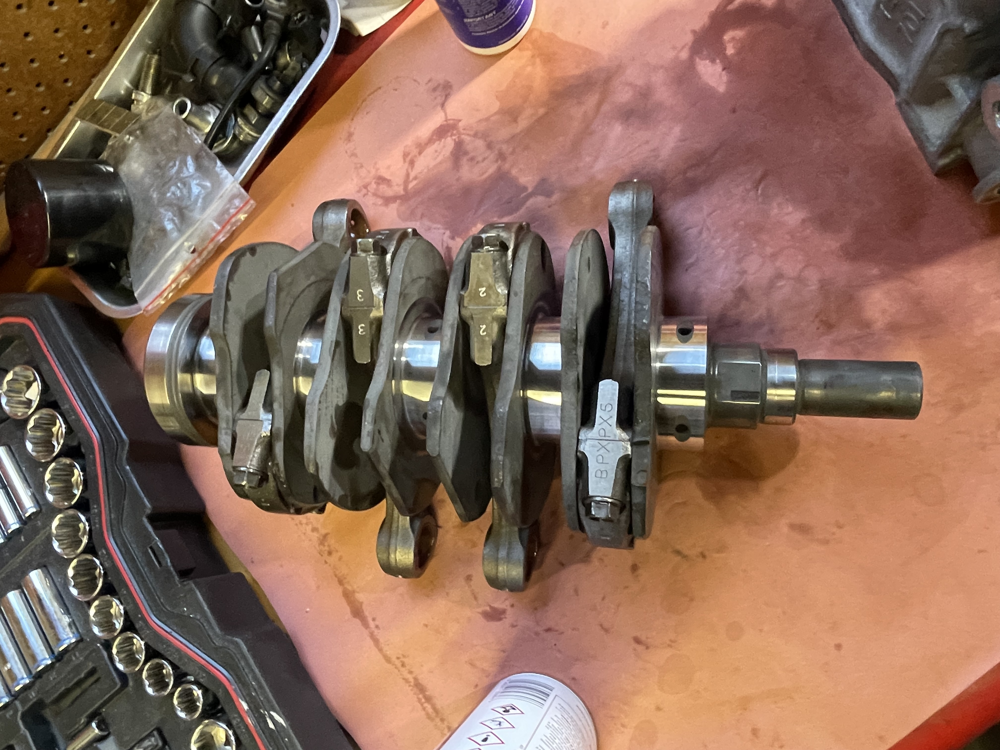
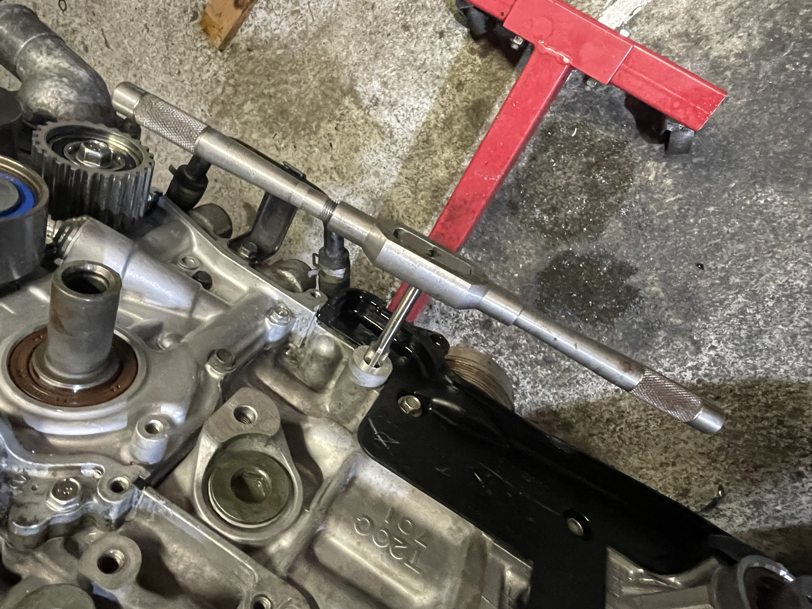
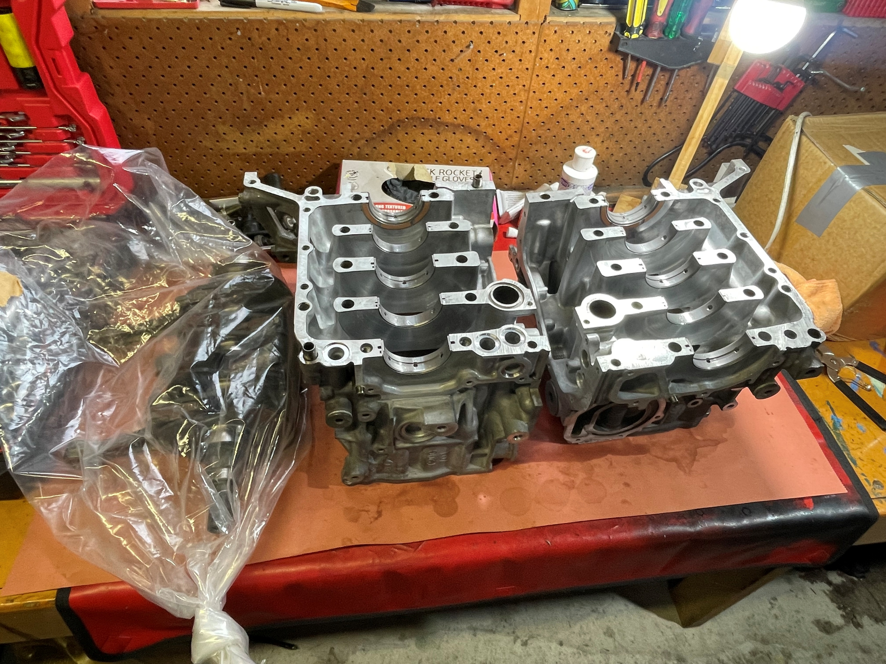
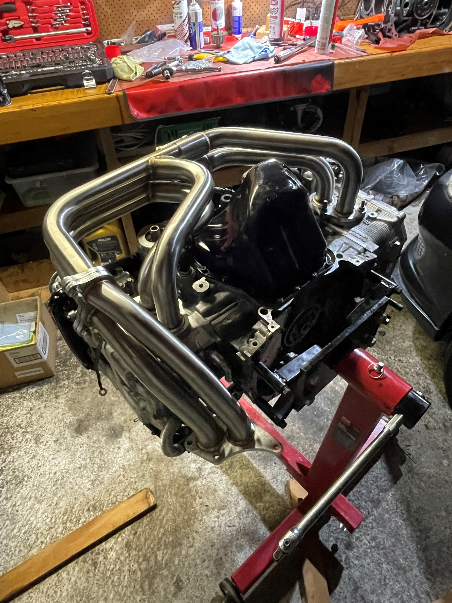

Motorsport / Automotive
Turbocharged Engine Build
A 2006 Subaru Legacy GT I rebuilt after the original engine failed. I diagnosed the failure, specced the build, assembled it, and got it running and back into daily use. The brief was simple: stronger and more reliable than stock under sustained boost, without chasing a number the hardware could not live with.

What I did
- Diagnosed an internal failure from running symptoms and a compression test, then chose to keep the car and rebuild it stronger than stock rather than return it to standard.
- Set a target of ~280 to 300 whp, up from ~210 to 220 stock, and confirmed with the tuner that it was feasible on the hardware before committing parts.
- Specced and built for reliability under sustained boost: a stronger STI block in place of the original, rotating assembly kept largely stock with targeted reliability upgrades (ARP studs, upgraded bearings, rings and valve springs), machined and refurbished heads, and reworked cooling and oiling.

- Repaired a stripped thread in the block at the timing idler pulley mount, drilling and tapping it for a thread insert so the bolt holds properly under load.

- Planned the full parts list up front so machine-shop work and long-lead parts were ordered early rather than mid-assembly.


- Running and back in daily use on a base map. Datalogging set up so the tuner can refine the map remotely off my logs. Final tune to target, plus anti-lag and flat-foot shifting calibration, still to come.
Built, running and back in daily use. Tuning to the tuner-confirmed ~280 to 300 whp target is the next step, not yet done.
Learned
Learned to plan the build and parts list up front, and to spend on quality where it actually matters rather than everywhere. The reliability upgrades and the machine-shop precision work were worth the money; performance that holds up over time came from there, not from chasing peak power.
← Back to projects